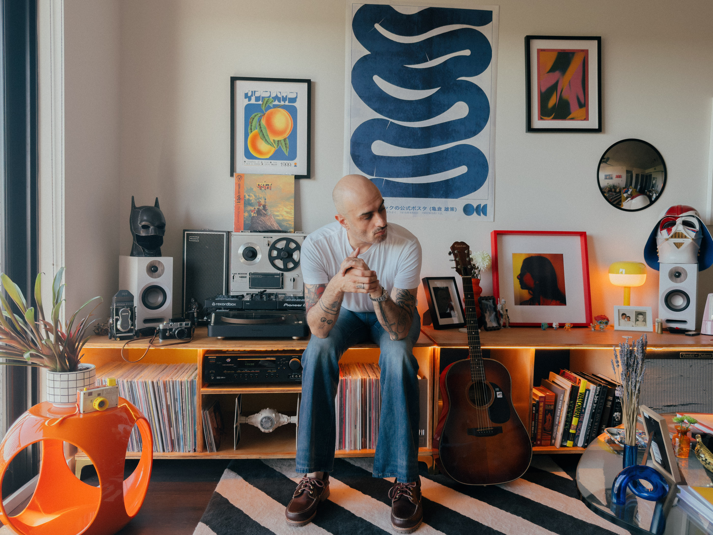

AGUSTIN
SANCHEZ.
Production is becoming a commodity. What remains scarce is judgment — knowing which problem matters, how to frame it for a room that needs to act, and when to push past the comfortable answer.
Product strategy. AI-amplified delivery.
Twenty-something years operating in an ever-evolving landscape.
MOST ORGS DON'T
HAVE A DESIGN
PROBLEM.
The artifact is not the deliverable. The decision is the deliverable. That's the gap most design organizations are sitting in, and it's the one I've spent twenty years learning how to close.
The next question is always the harder one: where exactly does it live?
CLARITY IS A
BUSINESS
OUTCOME.

When the problem is well-framed, organizations move with conviction. Priorities are defensible. Resources go to the right place. The people building know what they're optimizing for. The people funding it know what success looks like.
That clarity doesn't emerge on its own. Someone has to look at a complicated situation and turn it into something the organization can act on. That's the translation work. And it determines more about the outcome than anything that happens in the build.
Twenty years of that work teaches you what a well-framed problem looks like. And what it costs when the frame is wrong.
The most important decisions happen before anyone opens a tool.
MOST
ORGANIZATIONS
STALL AT THE
SAME MOMENT.
When priorities get committed before the problem is clear.
Making that breakdown visible — before it becomes a roadmap problem — is where this work begins.
THE THINGS THAT
DON'T CHANGE.
The tools will change.
Your craft doesn't have to.
The question has never been how fast you can produce — it's whether you know which one is worth keeping. Craft isn't about execution speed. It's the ability to recognize the right answer when you're looking at it. That's the one thing that doesn't get compressed away.
THE BEST ANSWERS LIVE IN
UNCOMFORTABLE PLACES.
The real answer usually requires someone to say something that makes the room go quiet. That discomfort is signal. Courage mostly looks like precision: being specific about what's true when no one else will be.
Where belief
becomes practice.
Most delivery failures are signal failures — teams building toward an answer that was never validated. AI-amplified delivery runs the same rigor at a fraction of the cost. Each phase answers a question before the next one begins.
5 Phases. 3 Signals. 2 Gates.
Each phase answers a specific question before the next begins — compressing cycle time without compressing the thinking.
The Compression Map
Each phase looks to solve the same problem. While AI shortens how long it takes to create artifacts, where can the humans lean in to provide judgement, expertise, and drive value for the business.
THE FAST ANSWER
IS USUALLY
THE WRONG ONE.
The most valuable thing I can bring into a problem space is the willingness to sit with it longer than feels productive. The question usually has more in it than the answer does — and the organizations that let that process run make fewer expensive corrections later.
WHERE THE THINKING LIVES.
GET IN TOUCH.
If you want to work together, send a message.
Message sent. I'll be in touch.